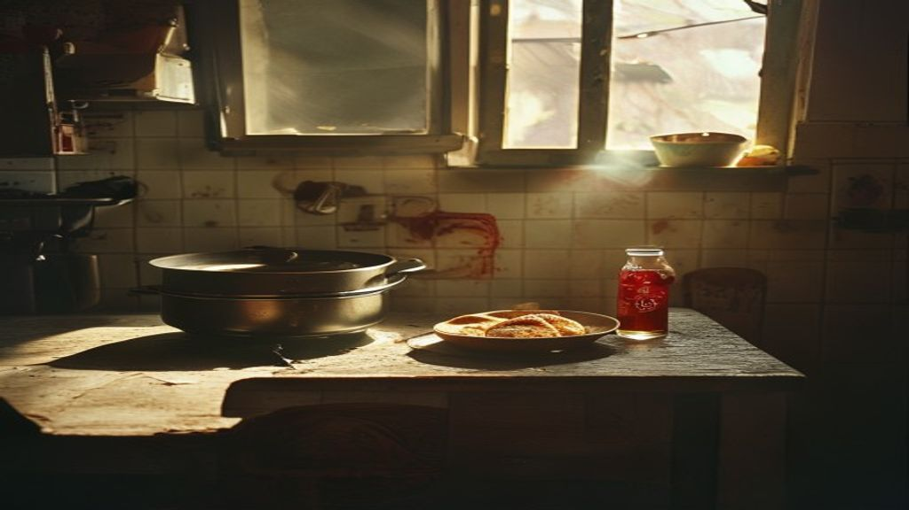

1990 · Maracaibo
Una infancia humilde

Nací en Maracaibo en 1990. Mi papá se fue de casa cuando yo tenía 8 años, y mi mamá, cocinera, se quedó sola criándonos a mis dos hermanos y a mí. Ella trabajaba todo el día, pero el sueldo de cocinera no alcanzaba y tampoco le quedaba tiempo para darnos la atención que un niño necesita. Hubo días en que solo comíamos pan con refresco, y otros en que la cena era lo que sobraba del restaurante donde ella trabajaba. Ropa poca, juguetes ninguno. Así fue mi niñez: humilde, pero llena de la fuerza de una madre que no se rindió.